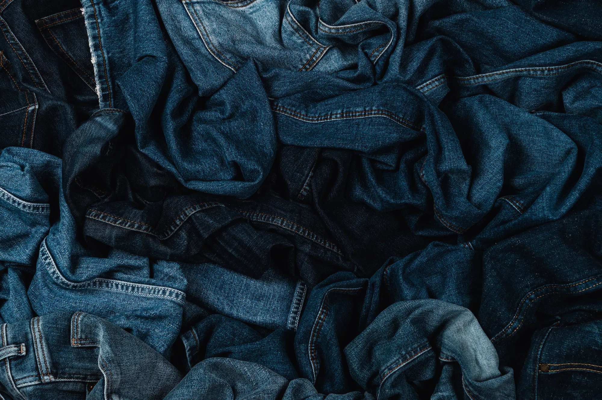

Fabric design system
Five brands. One system. Built in a year.
Five separate design systems collapsed into one, with a three-tier token architecture, a 9-step type ramp, and WCAG 2.1 AA across every component.
Challenge
Gap, Inc. ran five brands on five separate design systems, each hard-coded and maintained on its own. When one brand updated a product card, the others wanted it too, and every change was rebuilt four more times. Three brands were also refreshing their identities mid-project.
Solution
Built Fabric from a scrappy side experiment into a full multibrand system in one year: a three-tier token architecture (primitive, semantic, component), a 9-step type ramp, and Athleta's redesign as the pilot every other brand theme was built from. The result: one system for all five brands.
Impact
Before. After.
The shift wasn't cosmetic. It changed how fast teams could move and what became possible across five brands.
- SystemsBefore
Five brand libraries, maintained separatelyAfterOne system, themed for five brands - TokensBefore
Hard-coded values everywhereAfterPrimitive, semantic, and component tokens - TypeBefore
22 sizes with no defined scaleAfterA 9-step ramp, brand-flexible - Brand updatesBefore
Rebuilt four more times by handAfterA token swap - Dev speedBefore
Spaghetti code and site lagAfter4× faster development - AccessibilityBefore
Inconsistent across brandsAfterWCAG 2.1 AA in every component
Outcomes
Unified, Faster, Accessible
Unified
Five systems became one, without pausing the brands that depended on them.
- 5 → 1design systems
- 22 → 9type sizes
Faster
Designers and engineers both felt it once tokens and components landed.
- 60%design team efficiency
- 4×faster development
Accessible
Compliance was built into the components, not checked at the end.
- AAWCAG 2.1, every component
- 5brands covered
The full story
Everything behind the numbers
Four chapters. Jump to any of them, or swipe through.
Reflection
The system was the deliverable. The scrappiness was the story.
Fabric didn't start with a mandate or a roadmap. It started with one designer rebuilding the same product listing page four times for four stakeholder presentations, and deciding there had to be a better way. Three brand refreshes, new leadership mid-project, and shifting priorities meant adaptability wasn't a nice-to-have. It was the job.
“We were always scrappy. And the system we built proves that scrappy, done right, is more than enough.”
Fabric Design System · Gap, Inc.
Senior UX Designer · 2024 · Shipped to production
Interested in learning more?
Let's discuss how I can help with your design system, UX or accessibility challenges.
Get in touch